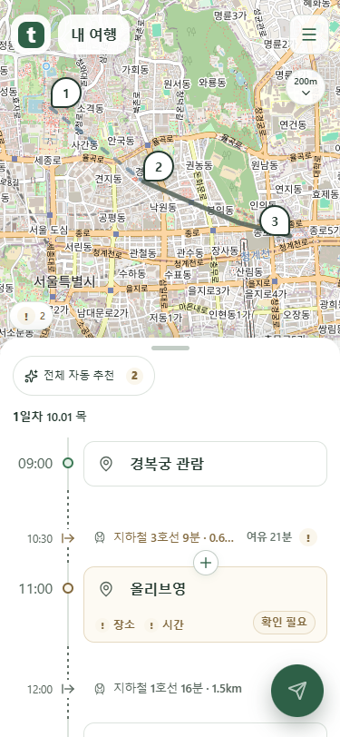
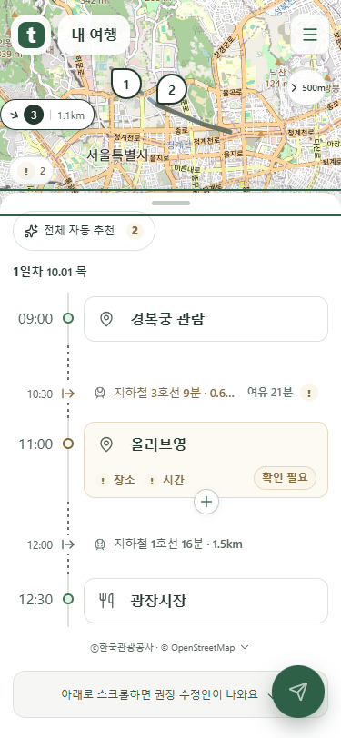
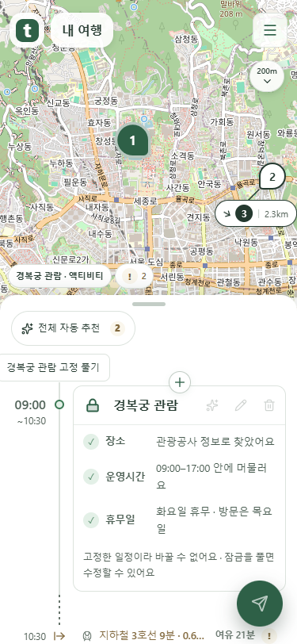
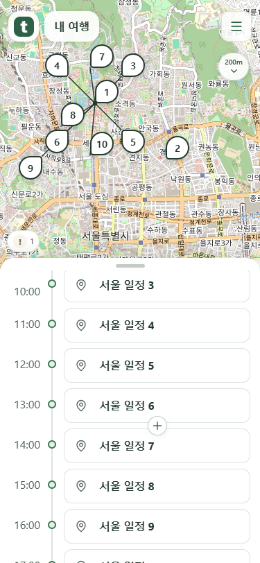

지도 버튼 폭·잠금 표시 수정
2026-10-10 추가 요청을 적용한 새 화면입니다. 이전 미리보기는 보존했습니다.
메뉴와 같은 폭 — 아래로 펼치기
메뉴와 거리 버튼 모두 폭 44px입니다. 기존 높이 40px를 유지하고 거리 아래에 화살표를 놓았습니다.

메뉴와 같은 폭 — 옆으로 펼치기
옆으로 펼칠 때도 폭 44px를 유지합니다. 버튼 배경의 투명도는 기존과 같습니다.

잠금은 아이콘만 채우기
잠금 버튼의 배경·테두리·후광을 제거했습니다. 잠긴 아이콘 내부만 연하게 채웁니다.
설명은 마우스·키보드 초점에서만
상자는 잠금 버튼의 도움말입니다. 마우스를 올리거나 키보드로 이동할 때만 나타나므로 유지했습니다.

스크롤하면 함께 사라지기
목록을 내리면 전체 자동 추천도 위로 사라집니다. 최상단으로 돌아오면 다시 보입니다.

로컬 mock 서버 화면입니다. 이미지를 누르면 원본 크기로 볼 수 있습니다.